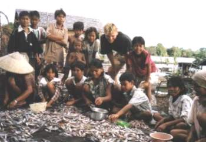

Een plaatselijke visser helpt ons bij het bewerken van bamboe voor onze tent. |
Een visser biedt ons een vis aan, die we vervolgens heerlijk opgegeten hebben. |
Waar mensen in Nederland peperdure cursussen volgen om het oplossingsgerichte denken aan te leren, lijken Kalimantan-bewoners deze gave al te hebben. |
In de stad: hier sliepen we bij de familie Alfadrie die we die dag toevallig ontmoet hadden. |
In een dorpje: we worden door het halve dorp uitgezwaaid nadat we er één nacht gelogeerd hebben. |
|  |
Enkele tientallen mensen (inclusief kinderen) prepareren de visvangst, zodat de vissen in de zon kunnen worden gedroogd. |
|
Een vrouw komt terug van haar akkertje. |